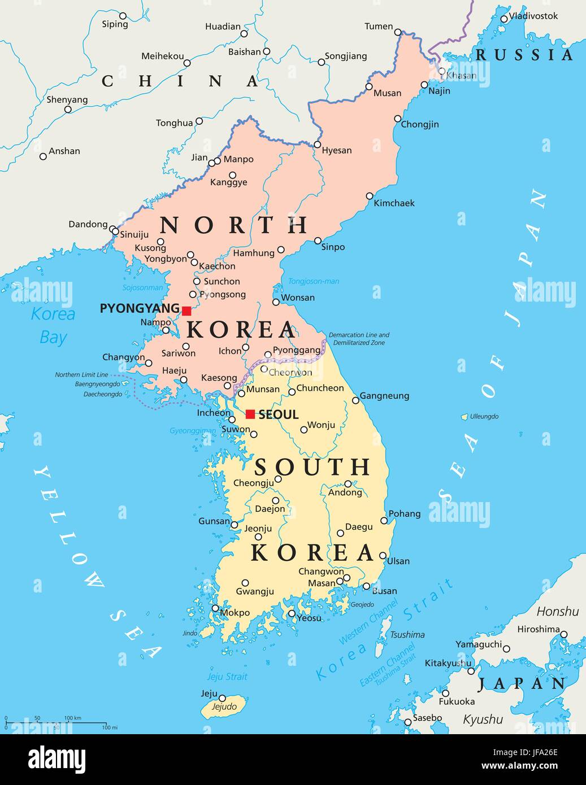
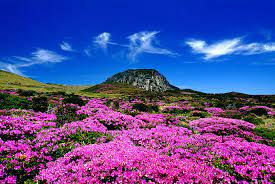

Sydkorea, formellt Republiken Korea (ROK), är en stat i Östasien, belägen på den södra delen av
Koreahalvön. I norr gränsar landet till Nordkorea. Dessutom har Sydkorea maritima gränser till Kina
och Japan. Sydkorea är ett av de mer demokratiska länderna i Asien och kallas ibland för Asiens
New-York.
Sydkoreas huvudstad heter Seoul och där bor ca. 10 miljoner invånare. Totalt i landet bor 52
miljoner.

Detta är Sydkorea som gränsar till grannlandet Nordkorea.
Sydkoreas geografi
Sydkorea utgör den södra delen av den koreanska halvön (söder om 38:e breddgraden), där landet upptar
45 procent av halvöns yta. Landets yta är 100 210 km² och det omges av Japanska havet i öster,
Koreasundet i söder och Gula havet i väster. Landet gränsar till Nordkorea i norr. Landets östra
kust är hög och rak, medan den sydvästra kusten är starkt sönderskuren av vikar, uddar och öar. Fyra
femtedelar av landets yta består av högland och berg.
Landets högsta bergstopp är vulkanen Halla-san som är 1 950 meter högt. Berget ligger på ön Jeju,
vilket också är landets största ö, belägen cirka 10 mil söder om fastlandet. Av Sydkoreas 3 500 öar
är bara 600 bebodda. I bergen finns källorna till flera floder som rinner västerut, varav floderna
Han, Nakdong och Geum är de mest betydelsefulla. De slingrar sig mellan bergskedjor i hela landet.
Den största bergskedjan är Taebaekbergen, som löper längs den östra kusten. En annan stor bergskedja
är Sobaekbergen. Ingen av kedjorna är särskilt höga.

Detta är Sydkoreas högsta berg Halla-san som finns att besöka på ön Jeju